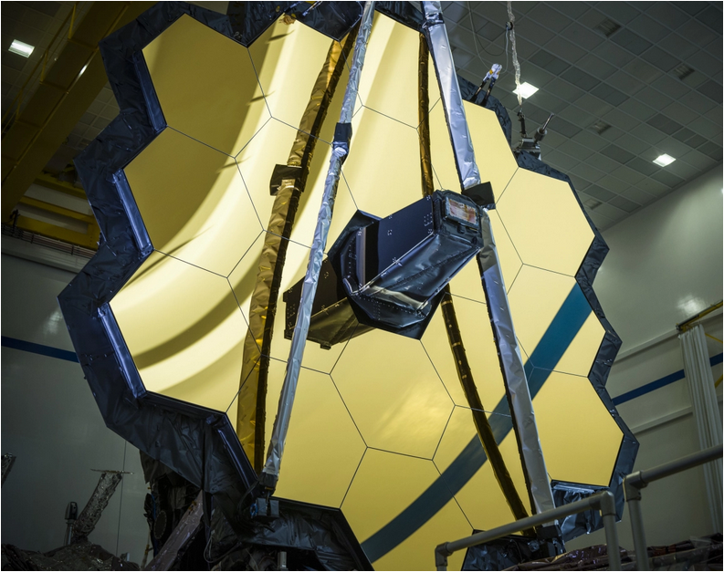
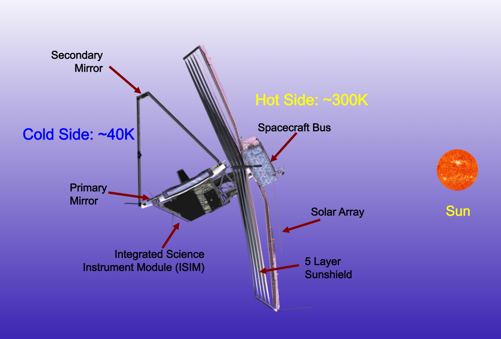
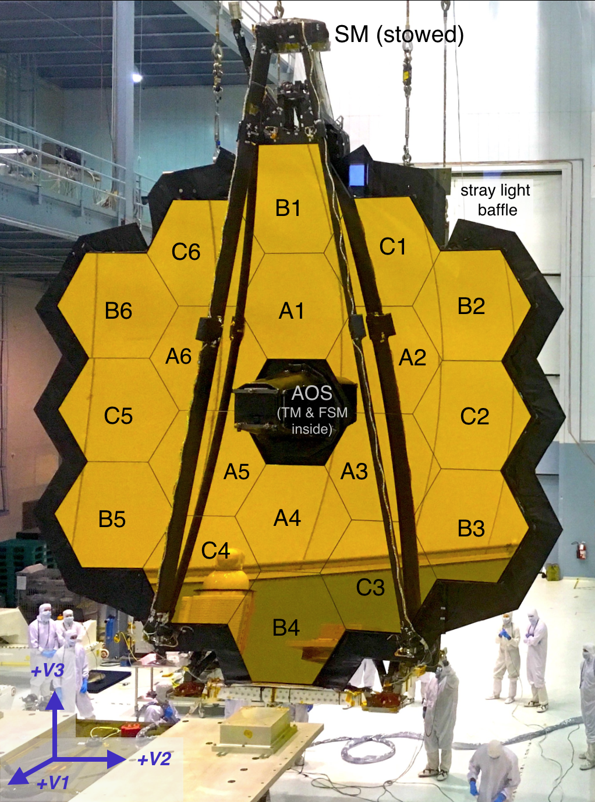

James Webb Observatory consists of a spacecraft bus, a five layer Sun shield, the Optical
Telescope Elements (OTE), and the Integrated Science Instrument Module (ISIM).
JWST has two thermal regions: one is the Sun-facing 300K hot side and the other is 40K cold
side. The spacecraft bus is located on the hot side. On the other hand, the OTE and the ISIM
are located on the cool side. These two sided instruments are separated by the sun shield that
will absorb 200,000 W of radiant of the energy but only 1 W of radiant can penetrate
completely through the diamond-shaped five layers of this shielding , and by this way, the
OTE and ISIM can work at 40 K (cryogenic temperature) that is essential for infrared vision
of JWST.

Now, let’s delve into the more accurate information about first three components :
Spacecraft Bus : Spacecraft bus maintains communication, attitude control, thermal control, data handling, and
transportation of the telescope. There’s also a propulsion subsystem in the spacecraft bus that
will be used for keeping the JWST onto its orbit (L2 orbit) for the lifetime, reducing stored
momentum from the reaction wheels, and controlling attitudes in certain ACS modes
(sprestoscopic mode).
Sun Shield : A tennis court-shaped, built with Kapton sun shield isolates the telescope and other optical
instruments from the energy of the Sun, Earth, Moon and JWST spacecraft bus. Sun shields
are super important for the proper functioning of JWST optical manoeuvres, and science
instruments as to detect the infrared light from the faint objects of the early universe, these
instruments must be kept below 40 K temperature. There are five layers; each layer’s length
is 21 m and width is 14 m. When heat passes through each layer, it blocks some heat, and
deflects the rest harmlessly out the sides. And by this way, only a few W of radiant energy
from the nearest large cosmological objects can reach the fifth layer.

Optical Telescope Elements (OTE) : The mirror system that collects and focuses light for JWST is called Optical Telescope
Elements (OTE); which includes primary, secondary, tertiary and fine sensing mirrors (FSM).
The effective focal ratio is f/20 and the effective focal length is 131.4 m. The mirrors are
made of beryllium which makes them lightweight and very stable to the temperature
variations over the range 30-80 K. They are also coated with gold to increase reflectivity
from 0.6 to beyond 28 micrometres.

Primary Mirror : The primary mirror has 18 hexagonal segments, and each segment has ~1.4 m in diameter
which , when all the segments are properly phased, acts as a single mirror of ~6.5 m in
diameter. An opaque border around the outer edge of the primary mirror helps minimize the
stray light. There are several actuators on the back for controlling the 6 spatial degrees of
freedom of the segments with the precision better than 10 nm. There’s also a 7th actuator
responsible for controlling the radius of curvature of each segment, but it also ensures that the
focuses of 18 segments are closely matched. Two segments needed a larger radius of
curvature than the rest, and hence they have been positioned in specific positions blocked by
the Lyot spots and aperture masks ( A1 and C3).
Secondary Mirror : The secondary mirror is a convex circular mirror of ~0.74 m in diameter. It has 6 actuators
which allow this mirror controlling its position and orientation like the primary mirror.
Aft Optics : The aft optics system consists of a fixed tertiary mirror and movable FSM. The tertiary mirror
is a concave aspheric mirror with an elongated shape roughly over 0.73 × 0.52 m in size. On
the other hand, FSM is a flat-sized mirror which will be used to stabilize images during
science observation, and adjusts itself in X- and Y- axis tilts based on the measurement made
by ACS (Attitude Control System).
Resources
JWST Observatory
The James Webb Space Telescope
Large Deployable Cryogenic Space Telescope